Field group
GROUP · A frame that gathers scattered fields into one bundle
What is a Field group?
- 1.1Adding a field and the property panel layout
1.1Adding a field and the property panel layout
Overview
Field group (GROUP) is a frame that gathers scattered fields into one bundle. It shows items that only make sense when read together, such as vital signs, inside one box. The biggest difference from other types is that it does not create a new input box — it works by picking fields that already exist in the form and moving them into the group. Ch. 3 So the group does not hold a value itself; each member keeps its own value.
Screen guide
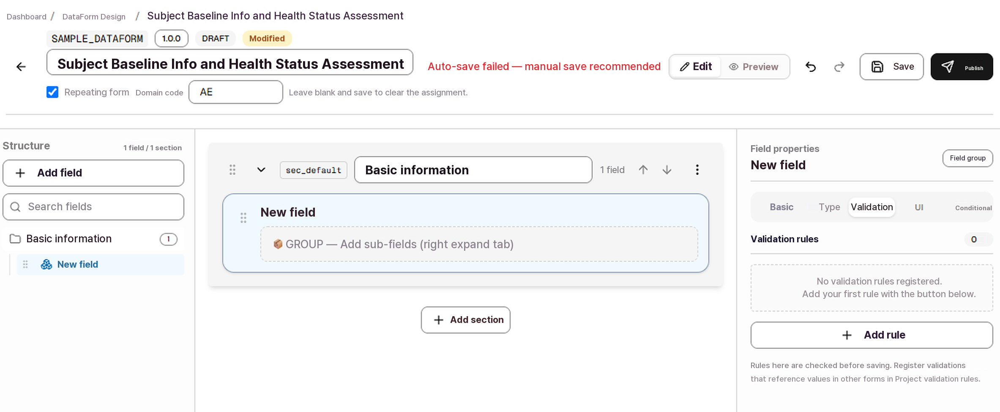
[+ Add field] — Specify the type here to create the field.
A new field is added to the structure tree. Its icon is a bundle.
The WYSIWYG canvas shows only a notice instead of a box — “GROUP — Add sub-fields (right expand tab)”. This is because it has 0 members. 3.1
Type badge “Field group” — The type of the selected field. It cannot be changed after the field is added.
5 property tabs — Basic · Type settings · Validation · UI · Conditional. Chapters 2–6 of this manual correspond to these tabs.
⚠ This capture shows the “Validation” tab open. The Basic tab items (fieldKey · display name · Required · SDV) are covered in Ch. 2. Note that the Basic tab does not show the AE semantic role and Allow not-measured declaration found in other types — because a group holds no value, those two features do not apply. 7.2
Precautions
Must check Data corruption · Form cannot be completed
- • ⛔ Without members, this field serves no purpose. That is the state in which no box appears on the canvas — be sure to add fields in the Type settings tab. Ch. 3
Easily misunderstood behavior
- • A group holds no value. Each member keeps its own value, and the group only shows them bundled together. That is why members also appear as separate, independent items in exported data. 4.3
- • Create the fields first and bundle them later. Even if you create the group first, you can do nothing without fields to put in it, so add the items to be bundled first. 3.1
Note
- • The orange bar on the left of the canvas marks “changed, not yet saved”. It does not point to group candidates, and it disappears when you save.
Basic tab — name · required · verification target
- 2.1fieldKey · display name · help
- 2.2Required
- 2.3SDV target (CRA source data check)
2.1fieldKey · display name · help
Overview
This area sets the group's name. The storage key (fieldKey) and the name shown on screen (label) are different values. The group's display name becomes the box title, so write it so that what is bundled inside is clear at a glance.
Screen guide
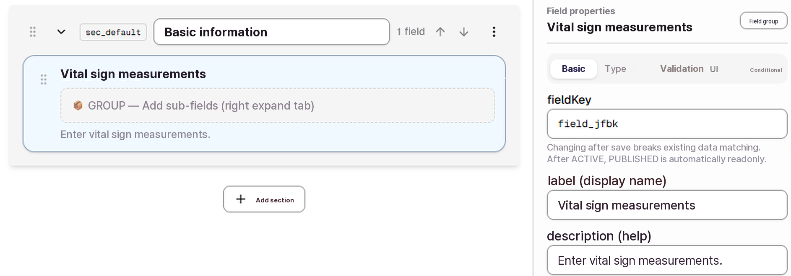
label (display name) — Enter the title shown above the box. The capture shows Vital sign measurements.
It is shown as the box title on the canvas. It is a different layer from the members' own names — member names are set separately in each member's Basic tab. 3.3
description (help) — Enter the supplementary text shown below the box. If left blank, nothing is shown.
It is shown in gray text below the box. The capture shows “Enter vital sign measurements.”
fieldKey — The group's key. It is assigned automatically, like field_jfbk, and ⚠ no value is stored under the group's key — values are stored under each member's key. 4.3
Precautions
Must check Data corruption · Form cannot be completed
- • State the basis of the bundle in the display name. “Measurements” alone does not tell what was measured or when — the box title is the meaning of that bundle.
- • Put in the help only guidance that applies to all members. A description that applies to one item only must go in that member's own help — the group help is attached to the whole box. 5.4
Easily misunderstood behavior
- • The group's fieldKey has nothing to do with values. However, it is used for conditional display Ch. 6 and references between groups, so do not change it after saving.
- • The display name (label) can be changed at any time. It does not affect stored values.
2.2Required
Overview
Sets whether this group must be filled for the form to be completed. ⚠ It works differently from the table type. In a table, a required column raises the whole table to required, but in a group, the members' Required settings are independent of the group's — a member's Required is counted separately as that member's own property.
Screen guide
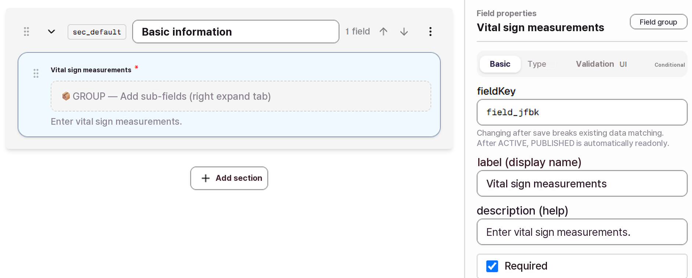
* is shown next to the box title on the canvasRequired — When selected, this group becomes a required item. If none of the members is filled, the form cannot be completed.
A red * is shown to the right of the box title on the canvas. The stars on individual members are set separately in each member's Basic tab.
label · description — The values entered in 2.1 are shown as is.
Precautions
Must check Data corruption · Form cannot be completed
- • ⛔ Do not confuse group Required with member Required. Even if the group is required, filling just one member satisfies the group. If every member must be entered, turn on Required in each member.
- • ⛔ Conversely, turning off group Required leaves member Required in effect. Members are independent fields, so their own Required settings are counted as they are — unlike a table, you cannot skip them all by turning off the container. 7.1
- • If the group is hidden by a condition, its members are hidden too and excluded from the required check. 6.1
Easily misunderstood behavior
- • In most cases, group Required is not needed. If specific items must be entered, turning on Required in those members makes the intent clearer.
2.3SDV target (CRA source data check)
Overview
SDV (Source Data Verification) is the process in which the clinical research associate (CRA) checks entered values against the site's source data. This setting is the same for all field types, so the screen is also the same regardless of type. However, assigning it to a group is not recommended — read the precautions below.
Screen guide


SDV target (CRA source data check) — When selected, this field is included in the CRA's check list.
When it becomes selected, the sub-item is enabled.
Verification required (if unverified, quality PENDING) — Can be set only after ① is selected. When selected, the quality status of the data stays at PENDING until the CRA finishes the check.
Before ① is selected, ② is grayed out and disabled. As the on-screen notice says, “Set the field as a verification target first to choose whether verification is required.”
Precautions
Must check Data corruption · Form cannot be completed
- • ⛔ Assign SDV to the members, not the group. The group itself has no value, so there is nothing to check — the values to compare with source data are held by members such as mean arterial pressure · pulse pressure. 1.1
- • ⛔ If you turn it on for the group, it is easy to mistake that for turning it on for the members. Members are independent fields, so the group setting is not passed down to them — turn it on for each member separately.
Easily misunderstood behavior
- • SDV cannot be performed by the person who entered the data. The system enforces cross-verification (Cross-User SoD), so the person entering and the person verifying must be different.
Note
- • The quality status progresses in the order PENDING → VERIFIED → CLEAN. If even one field marked verification required is unverified, the data cannot become CLEAN.
Type settings tab — member setup (the core of this type)
- 3.1Initial state with no members
- 3.2Choosing a field to put in the group
- 3.3Result of adding — the field moves into the group
- 3.4Items per row (itemsPerRow)
3.1Initial state with no members
Overview
This is the most important tab for a field group. There are only two settings — how many to line up per row (Items per row) and which fields to bundle (member picker). In the capture, the two fields “Mean arterial pressure (MAP)” and “Pulse pressure” were created in the form beforehand — because the group brings them in rather than creating them.
Screen guide
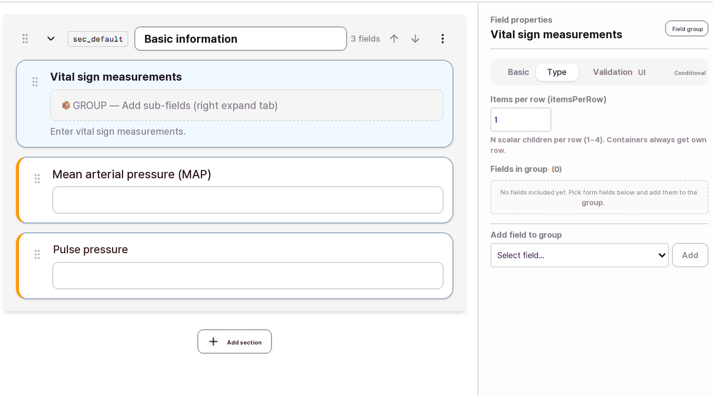
Items per row (itemsPerRow) — Sets how many members are placed per row inside the box. Choose from 1–4; the initial value is 1. 3.4
Add field to group — Pick a field in the form and put it in the group. 3.2
[Add] — Moves the field picked in ② into the group. 3.3
Fields in group (0) — The member list. Initially the notice “No fields included yet. Pick form fields below and add them to the group.” is shown.
Items per row notice — “N scalar children per row (1~4). Containers always get own row.” If you add a table or another group as a member, that member alone takes up a whole row.
“Mean arterial pressure (MAP)” and “Pulse pressure” sit still outside the group as independent fields. These two are the candidates for ②.
Type badge “Field group” — The type of the field being set up.
Precautions
Must check Data corruption · Form cannot be completed
- • ⛔ You must create the fields to bundle first. If the form has no other fields, the picker shows only “No fields can be added. Add fields to the form first.” and you can do nothing. 1.1
Easily misunderstood behavior
- • There is no Default value (defaultValue) item. A group holds no value, so there is nothing to prefill — if you need a default value, set it on a member. 7.2
- • There is no Auto calculation (calculation) item either. Computing the whole bundle as a single number does not make sense. If you need a calculation, put it on a number member. 7.2
- • You can put a group inside a group. However, nesting is limited to 3 levels; candidates beyond the limit cannot be selected in the picker and carry the reason “— Nesting depth limit exceeded”. 3.2
3.2Choosing a field to put in the group
Overview
In the picker, pick one field to put in the group. The list shows the form's top-level fields with their names and types. Picking alone does nothing; you must press [Add] for the field to actually move. 3.3 You can pick only one at a time, so repeat for each member.
Screen guide
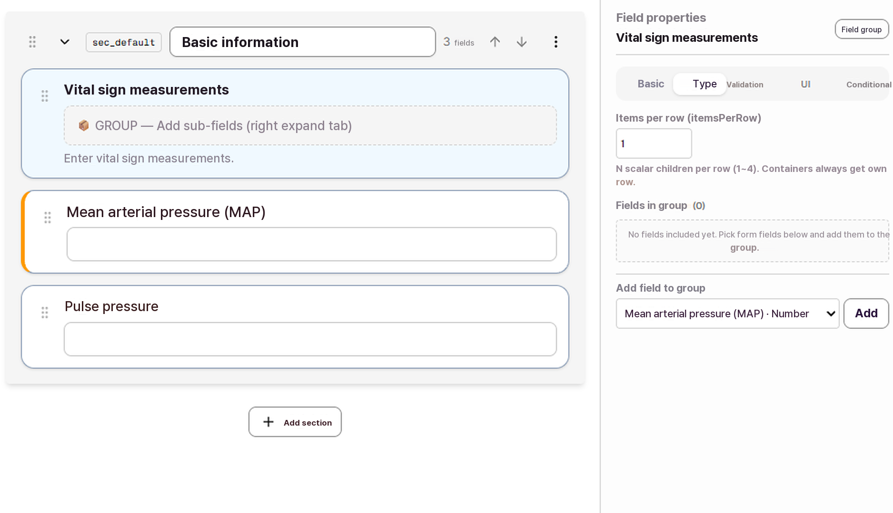
Mean arterial pressure (MAP) · Number picked in the picker — not moved yetAdd field to group — The capture has Mean arterial pressure (MAP) · Number picked. List items use the display name · type format, so fields with the same name can still be told apart.
[Add] — It is grayed out and disabled before a selection, and you must press it after picking to move the field into the group. 3.3
The canvas is still unchanged. “Mean arterial pressure (MAP)” is still outside the group — picking it in the picker alone does not move it.
Fields in group (0) — Still 0.
Precautions
Must check Data corruption · Form cannot be completed
- • ⛔ A group beyond the nesting depth limit cannot be picked. It is shown disabled in the list with “— Nesting depth limit exceeded” — it is not hidden but shows the reason, so you can see right there why it is not allowed. 3.1
Easily misunderstood behavior
- • The list shows only top-level fields. Columns of a table (table type) exist only inside the table, so they do not appear in the list — they cannot be bundled into a group. 7.2
- • Section headers and fields with an empty name are also excluded. To add a field without a name, first give that field a display name. 2.1
Note
- • You can change the order later. The order of adding becomes the display order, but you can adjust it with ∧ ∨ in the member list. 3.3
3.3Result of adding — the field moves into the group
Overview
This page is the core of the field group. When you press [Add], the field is moved, not copied — it leaves the top level and goes into the group. That is why the field count in the structure tree drops by one, and the field is shown indented one level under the group.
Screen guide
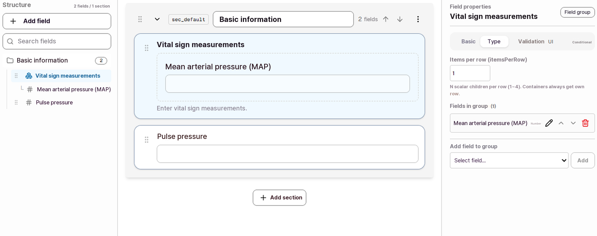
1 entry has been added to the member list. A type badge (Number) is attached along with the display name.
In the structure tree, “Mean arterial pressure (MAP)” is indented under the group. It is no longer a top-level field.
On the canvas, the field also goes into the box. “Pulse pressure” still remains outside.
3 member action icons — From the left: ✏ Edit · ∧ ∨ Order · 🗑. The pencil goes to that member's property panel so you can set the member's own name · Required · validation, and the arrows change the member order. ⚠ 🗑 is not delete but “Remove from group” — pressing it only returns the field to the top level; it does not disappear and its value stays as it is.
Fields in group (1) — The count changed from 0 to 1.
The top-level field count dropped from 3 to 2. This is because the member moved into the group.
The picker returns to “Select field…”, and the field just added is removed from the candidates. To add the remaining “Pulse pressure”, repeat the same procedure once more.
Precautions
Must check Data corruption · Form cannot be completed
- • ⛔ Do not mistake 🗑 for delete. It only removes the field from the group; neither the field nor its value disappears. To actually delete a field, select that field and delete it.
- • Check first what happens to the members when you delete a group. If you only intend to unbundle, it is safer to remove the members one by one with 🗑 and then delete the empty group.
Easily misunderstood behavior
- • A member is still an independent field. Even after moving into the group, it keeps its own fieldKey · Required · validation, so it can be referenced directly in validation rules and conditions. This is the decisive difference from the columns of a table (table type). 4.3 · 7.1
- • Configure members in the members themselves. The group property panel has no Required or validation for members — press ✏ to go to that member. 2.2
3.4Items per row (itemsPerRow)
Overview
Sets how many members to line up per row inside the box. Choose from 1–4; if not set, it is 1 (stacked vertically). Changing the value is reflected on the canvas immediately, so you can check the result right away. ⚠ This is a setting that changes only the layout and does not affect stored values.
Screen guide
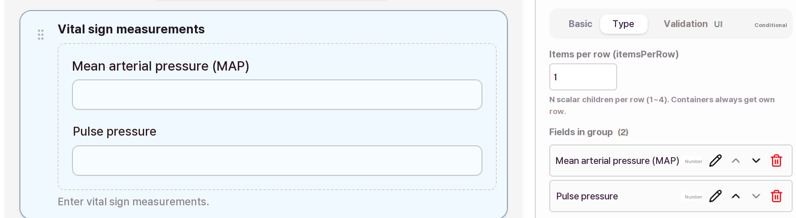
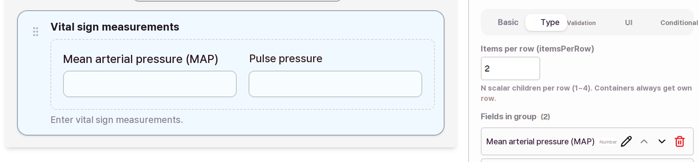
Items per row (itemsPerRow) — Enter the number directly. Values less than 1 or greater than 4 are automatically adjusted into the range.
With 1, “Mean arterial pressure (MAP)” and “Pulse pressure” are placed one above the other; with 2, they are placed side by side. The vertical space the box takes up shrinks accordingly.
Precautions
Must check Data corruption · Form cannot be completed
- • ⛔ Use 3 · 4 with care. Putting four in a row narrows each box so that long display names are cut off — check it together with Layout width 5.2.
Easily misunderstood behavior
- • Put items that must be read together in the same row. Values interpreted as a pair, such as systolic · diastolic blood pressure, need to be side by side for the recorder to notice an entry error.
- • If you add a table · another group as a member, this setting is ignored. As the on-screen notice says, “Containers always get own row”, so that member alone takes up a whole row. 3.1
Note
- • Clearing the value returns it to 1. Stacking vertically is the default layout.
Validation tab — checking values before saving
- 4.1No validation rules
- 4.2Adding a rule
- 4.3Completed rule — Compare with another field
4.1No validation rules
Overview
This tab collects the rules that check before saving whether a value meets the conditions. ⚠ The rules here apply to the group itself, and the group has no value — so effectively only one kind of rule can be used 4.3. Create rules that check each member's value in that member's Validation tab. 3.3
Screen guide
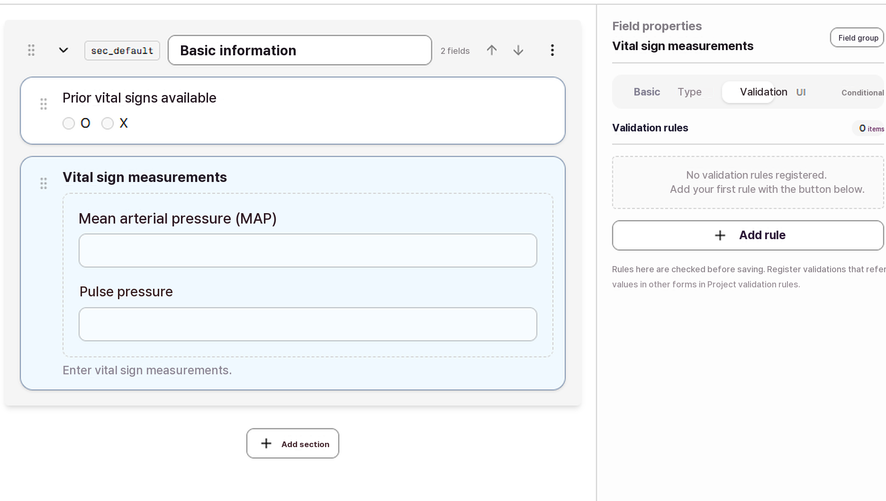
[+ Add rule] — Creates the first rule. The screen after selecting it is explained in 4.2.
The Validation rules area and the number of registered rules. Initially it is 0 items.
When there are no rules, the notice “No validation rules registered. Add your first rule with the button below.” is shown.
Notice at the bottom — “Rules here are checked before saving. Register validations that reference values in other forms in Project validation rules.”
Precautions
Must check Data corruption · Form cannot be completed
- • ⛔ Check members' values in the members. A rule such as “Mean arterial pressure must be 40–200” belongs in that member's Validation tab; putting it in the group's tab here checks the wrong target (a bundle with no value). 3.3
- • ⛔ Validations that reference values in other forms cannot be created here. Register such rules on the “Project validation rules” screen — but what you can pick on that screen is the members, not the group itself. 7.2
Easily misunderstood behavior
- • Rules that compare members with each other can be created on the member side. Group members are treated as top-level fields, so in one member's Validation tab you can choose another member as the field to compare. 4.3
- • The capture has two top-level fields: “Prior vital signs available” (Single choice) and “Vital sign measurements” (group) — whether the group is collected depends on the answer to the first field, so in 4.3 a rule linking the two fields is created.
4.2Adding a rule
Overview
Selecting [+ Add rule] in 4.1 creates a Rule 1 block. Initially “Value range” is set, but a group has no value to compare at all. Change it to “Compare with another field” — the only kind that can be used with a group. 4.3
Screen guide
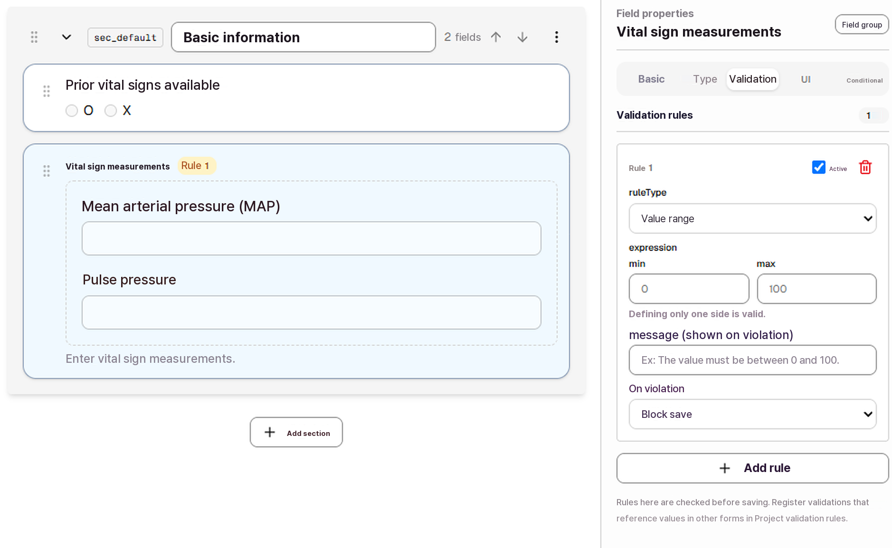
[+ Add rule] — Creates one more rule. (It is the same button you selected in 4.1.)
A “Rule 1” badge is shown next to the box title on the canvas.
The number of rules changes to 1 item.
Active checkbox and Delete icon — You can pause a rule without deleting it.
ruleType — The kind of rule. Right after creation it is “Value range”, so be sure to change it to “Compare with another field”.
min — The lower-limit box that appears when Value range is chosen.
max — The upper-limit box that appears under the same condition.
message (shown on violation) — The message shown to users when the rule is violated.
On violation — Select either Block save or Warning. (Depending on ruleType, it may not be selectable — 4.3)
The faint 0 · 100 and “Defining only one side is valid.” are guidance for Value range, not set values.
Precautions
Must check Data corruption · Form cannot be completed
- • ⛔ Do not put a blood pressure range here. min · max look at the group's own value, but the group has no value, so nothing happens — it does not raise an error either, so you move on believing the rule is in place. Put the range on the member. 4.1
- • ⛔ Putting “Format (regex)” on a group blocks saving permanently. The regex converts the bundle into a fixed internal string before checking, so whatever pattern you set, it is always violated and the recorder has no way to save the form.
- • ⛔ “Decimal places” does not work either. For the same reason — put decimal places on a number member. 4.1
- • If message is left blank, users cannot tell why saving was blocked. Be sure to enter it.
4.3Completed rule — Compare with another field
Overview
Changing ruleType to Compare with another field checks against the value of another field in the same form. A group has no value, so only this rule is meaningful — because the comparison target is another field, not the group itself. ⚠ Look closely at the item count in the on-screen notice — it reveals the nature of this type.
Screen guide
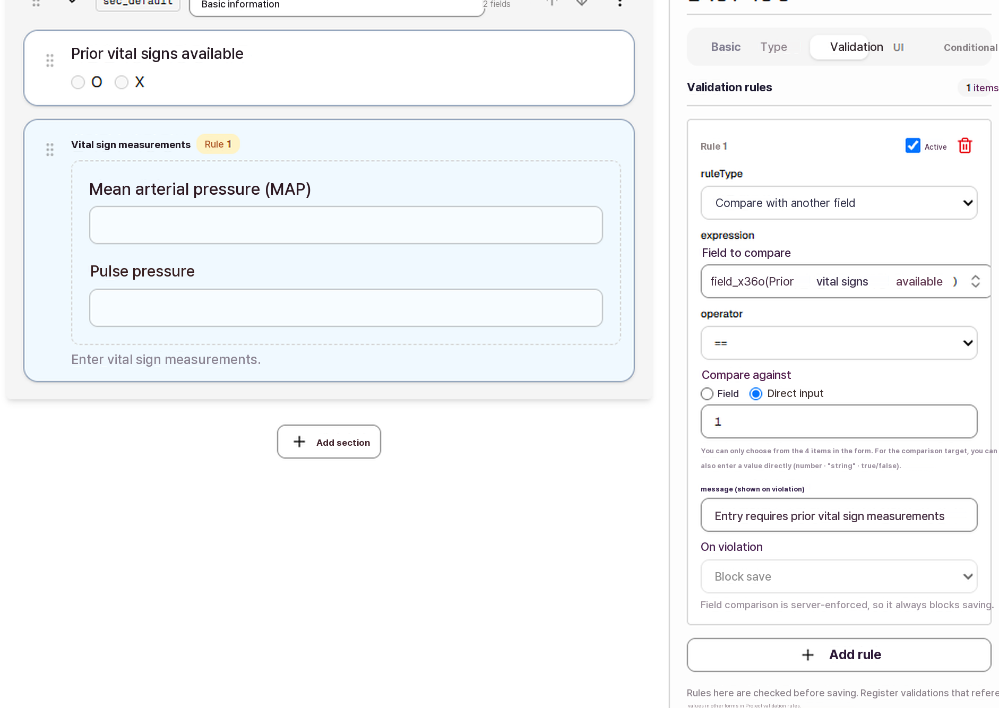
1ruleType = Compare with another field — When selected, the boxes below change for comparison.
Field to compare — The capture shows field_x36o(Prior vital signs available). ⚠ Do not pick the group itself.
operator — The comparison method. The capture shows == (equals).
Compare against — Select either Field or Direct input. The capture uses direct input with 1 — the stored value of “Prior vital signs available”.
message (shown on violation) — The capture shows Entry requires prior vital sign measurements.
On violation — It is grayed out and disabled. As the on-screen notice says, “Compare with another field is server-enforced, so it always blocks saving.”
On-screen notice — “You can only choose from the 4 items in the form.” ⚠ There are only two top-level fields (prior availability · group), yet it says 4 — because the two group members are also included as candidates. 7.1
Precautions
Must check Data corruption · Form cannot be completed
- • ⛔ Do not pick the group itself as the field to compare. The group has no value, so it can never equal
1, and the moment even one member is filled the rule is violated and saving is blocked permanently. - • ⛔ In Compare against, enter the stored value, not the on-screen text. “Prior vital signs available” is shown on screen as
O·X, so first check in that field's option list whether the stored value really is1. - • The same relationship can also be built with conditional display 6.2. Using both creates a duplication that blocks saving without even asking, so use only one — for groups, conditional display is recommended. 6.1
Easily misunderstood behavior
- • Group members appear in the list as they are. This is because members are treated as top-level fields, which is why a rule such as “if mean arterial pressure is entered …” can be set in another field. Columns of a table (table type) do not appear in the list, so this is not possible for them. 3.3
UI tab — screen layout and guidance text
- 5.1UI tab layout
- 5.2Layout width
- 5.3Read-only · hidden
- 5.4placeholder · helpText
5.1Overall layout
Overview
This tab sets how the field is laid out and guided on screen, not the value itself. Settings in this tab do not change the stored data itself. ⚠ Of the five items, placeholder does not work for a group — because a group has no input box to type text into. 5.4
Screen guide
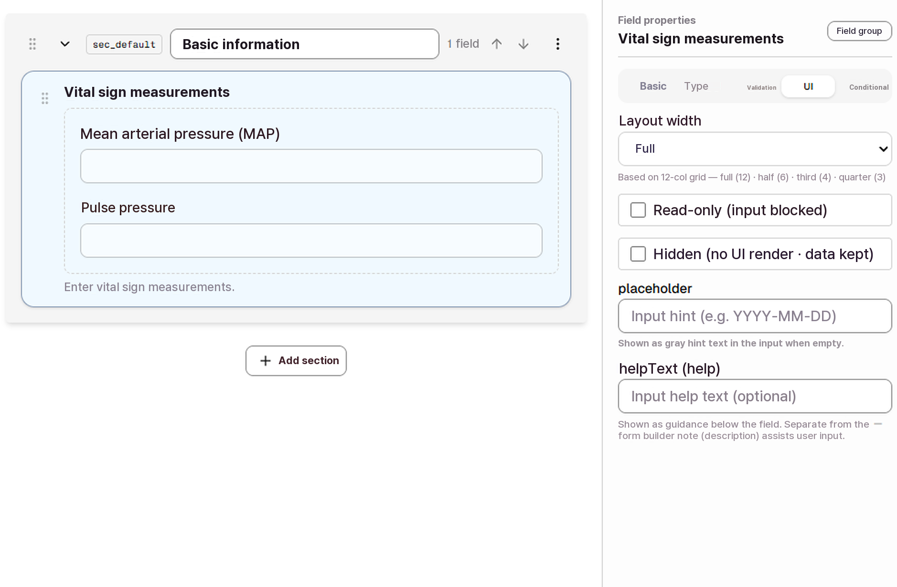
Layout width — The width this box takes up in one row of the form. Together with Items per row 3.4, it determines the layout inside the box. 5.2
Read-only (input blocked) — Shows the field but prevents changes. All members are locked at once. 5.3
Hidden (no UI render · data kept) — Hides it from the screen. The box and its members disappear together. 5.3
placeholder — Not applied to a group. The hint text in member input boxes is set in each member's UI tab. 5.4
helpText (help) — Guidance text shown below the box. This one works normally. 5.4
Type badge “Field group”
Precautions
Must check Data corruption · Form cannot be completed
- • ⛔ Typing in placeholder does not change the screen. A group is not an input box but a box that holds members, so there is no place to put the text — if you need hint text inside a box, write it in that member's UI tab. 5.4
- • ⛔ Hidden does not delete stored values. It only hides them from the screen; the members' values remain and are included in exports and the audit trail. 5.3
Easily misunderstood behavior
- • Settings in this tab do not change stored values. Only the layout and guidance change.
Note
- • Do not use Read-only and Hidden together. Hidden takes precedence, so the Read-only setting has no effect. 5.3
5.2Layout width
Overview
Sets the width this box takes up in one row of the form. ⚠ In a group, this setting is multiplied by Items per row 3.4 — with half width and 2 per row, each member uses only 1/4 of the full width. Do not look at the two settings separately; check them together.
Screen guide
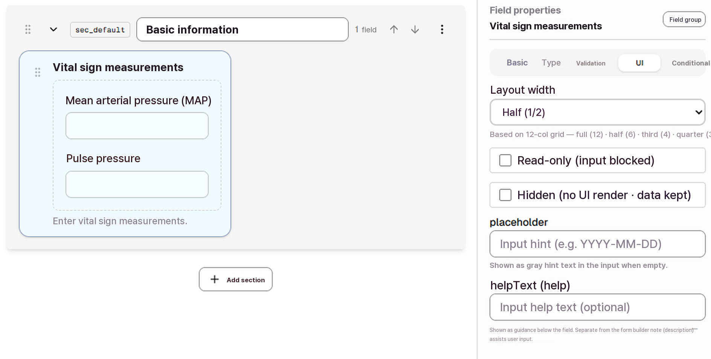
Layout width — Select from Full · Half (1/2) · 1/3 · 1/4.
The whole box shrinks to half width. The members inside narrow as well, and other fields are placed in the remaining space of the same row.
Based on 12-col grid — As the on-screen notice says, “full (12) · half (6) · third (4) · quarter (3)”.
Precautions
Must check Data corruption · Form cannot be completed
- • ⛔ Do not combine a narrow width with a high Items per row. Half width × 4 per row makes each box 1/8 of the full width, so neither display names nor values can be read. 3.4
Easily misunderstood behavior
- • If there are two or more members, full width is recommended. A group's box border and title take extra space, so it feels narrower than a single field at the same width.
- • A group with only one member may use a narrower width. In that case, however, first consider whether there is any reason to bundle it as a group. 1.1
Note
- • If not set, full width is applied.
5.3Read-only · hidden
Overview
These settings show the box but prevent changes, or hide it from the screen while keeping the values. Neither deletes stored values, and they apply to all members in the box — to lock or hide only some members, set it separately in that member's UI tab.
Screen guide
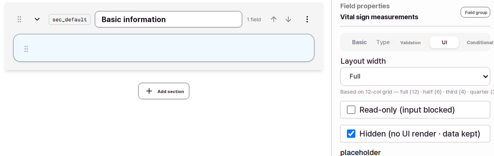
Read-only (input blocked) — When selected, members are shown but the recorder cannot edit them. Everything in the box is locked.
Hidden (no UI render · data kept) — When selected, this box is not shown on the entry screen.
The canvas card is left with only an empty border. Neither the title nor the members are shown.
Layout width — The value set in 5.2.
Precautions
Must check Data corruption · Form cannot be completed
- • ⛔ The values of members hidden with Hidden remain as they are. They are included in exports and the audit trail, so if a value must not be kept, delete the value rather than hiding it. 4.3
- • ⛔ Hiding a required member can prevent the form from being completed. Unlike conditional display, Hidden in this tab does not exempt from the required check — to hide based on a condition, use conditional display. 2.2 · 6.1
Easily misunderstood behavior
- • Use Read-only for values brought in from elsewhere. Do not use it for bundles the recorder must enter directly.
Note
- • If Hidden and Read-only are both selected, Hidden takes precedence.
5.4placeholder · helpText
Overview
Sets the guidance text that goes inside and below the box. In a group, the two items have different fates — helpText is shown normally below the box, but placeholder is not used anywhere. This is because a group is not an input box but a box that holds members.
Screen guide
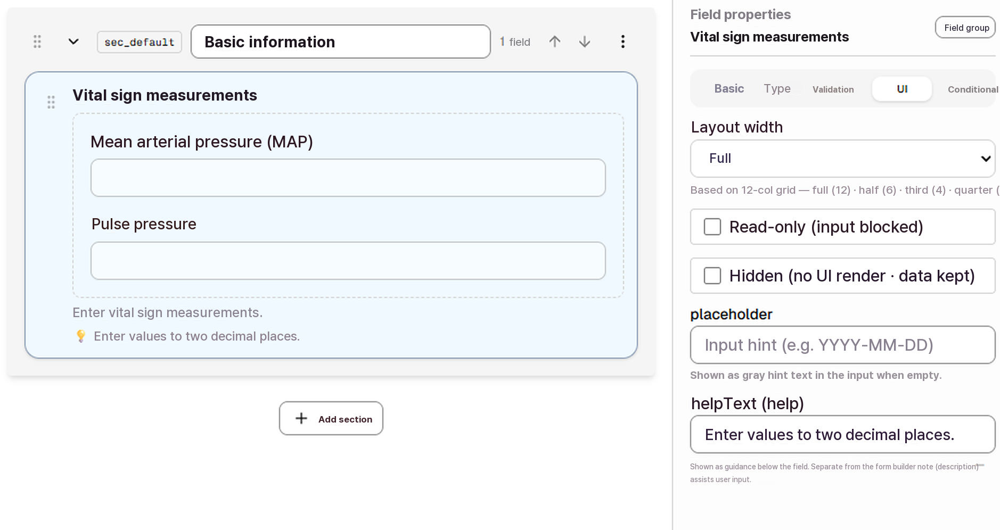
placeholder — Faint text shown in the input box when there is no value. Not applied to a group.
Member input boxes follow each member's own settings — the two boxes in the capture are empty because no placeholder was set on those members, and whatever you enter here will not fill them. 5.1
helpText (help) — Guidance text shown below the box. The capture shows “Enter values to two decimal places.”
It is shown below the box with a 💡 icon. This one works normally.
description (help) — The text entered in 2.1. It is a different item from helpText and is shown on the line above without an icon.
Precautions
Must check Data corruption · Form cannot be completed
- • ⛔ Text written in placeholder is not shown anywhere. If you need hint text inside a box, press ✏ to open that member and set it there. 3.3 · 5.1
- • ⛔ Do not write in helpText anything that applies only to a specific member. The text is attached to the whole box, so it is misread as applying to the other members too. 2.1
Easily misunderstood behavior
- • Write rules that apply to all members in helpText. Writing “Enter values to two decimal places.” as in the capture is read as guidance for every box in the group.
- • description and helpText are shown together. If you enter both, they make two lines, so do not write the same content twice. 2.1
Conditional tab — showing a field based on another value
- 6.1Enabling conditional display
- 6.2Setting the condition
6.1Enabling conditional display
Overview
This feature shows or hides this box based on the value of another field. It is especially powerful for groups — because a single condition makes all members in the box appear and disappear together. There is no need to repeat the same condition on each member.
Screen guide
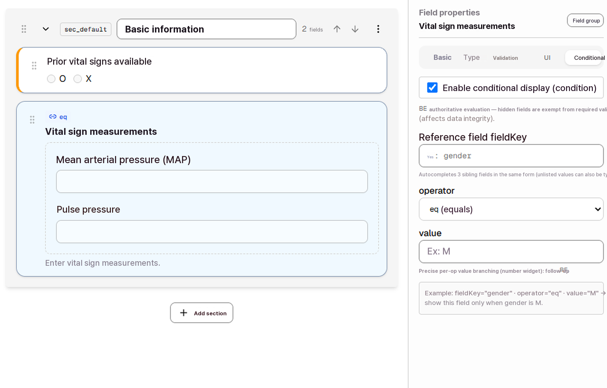
Enable conditional display (condition) — When selected, the condition settings below appear.
An 🔗 eq badge is shown above the box on the canvas to indicate that a condition is applied.
Reference field fieldKey — Another field in the same form on which the condition is based. ⚠ As the on-screen notice states, “Autocompletes 3 sibling fields in the same form”, so group members are also included as candidates. 4.3
operator — The comparison method. The default is eq (equals).
value — The value to compare. Enter the stored value of the reference field. 6.2
⚠ On-screen notice — “Hidden fields are exempt from required validation (affects data integrity).” The condition is evaluated by the system.
Example at the bottom — fieldKey="gender" · operator="eq" · value="M" → show this field only when gender is M.
Precautions
Must check Data corruption · Form cannot be completed
- • ⛔ A condition set separately on a member applies together with the group condition. Even if the group is shown, a member whose own condition is false stays hidden — stacking two conditions makes it hard to trace why something is not shown.
- • ⛔ If the condition becomes false after data has been entered, the box disappears from the screen. The members' values remain, so if the answer to the earlier question is changed later, the remaining values must be deleted separately. 5.3
Easily misunderstood behavior
- • The condition also applies to the members. When the group is hidden, all members inside are hidden too and excluded from the required check — so once they are bundled, you only need to set the condition once. 2.2
Note
- • If you enable the condition and leave the reference field blank, the condition is never met. Be sure to fill in all of ②–④. 6.2
6.2Setting the condition
Overview
This is the state after the condition enabled in 6.1 has been filled in completely. With this setting, the box is shown on screen only when the value of “Prior vital signs available” is 1, and the two members inside appear with it. It uses the same reference field as the validation rule in 4.3, but instead of blocking saving, it does not ask at all.
Screen guide
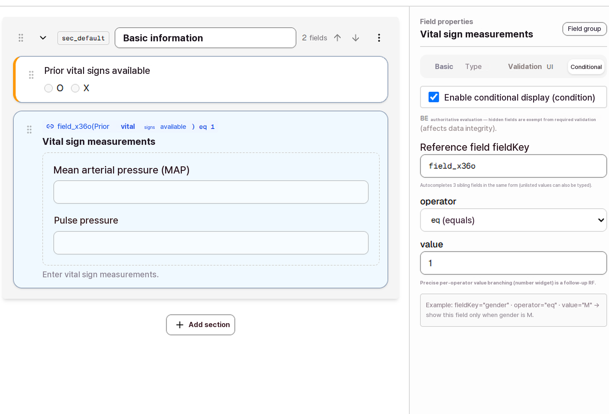
Prior vital signs available is 1Reference field fieldKey = field_x36o — Points to the “Prior vital signs available” field in the same form. It is the same field as in the validation rule in 4.3.
Result of entering all of ①–③ — the canvas badge becomes specific: 🔗 field_x36o(Prior vital signs available) eq 1.
operator = eq (equals)
value = 1 — Enter the stored value of the option, not the O shown on screen.
⚠ On-screen notice — “Hidden fields are exempt from required validation (affects data integrity).”
Example at the bottom — fieldKey="gender" · operator="eq" · value="M" → show this field only when gender is M.
Precautions
Must check Data corruption · Form cannot be completed
- • ⛔ In value, enter the stored value, not the on-screen text. If you write
Obecause the reference field is shown on screen asO·X, the condition is never met and the box is never shown. First check the stored value in the option list of the field you reference. - • ⛔ Changing the stored value of the reference field silently breaks the condition. If the stored value is changed from
1toY, this condition simply stops being met without any error — that is why changing stored values after publishing is risky. - • ⛔ Take care when using a group member as the reference field. Members appear as candidates, but if you use a member of a group in that same group's condition, the moment the group is hidden that member is hidden too, and the condition can no longer be reversed. 6.1
Easily misunderstood behavior
- • After setting it, check with Preview. Change the reference value back and forth to confirm that the box and its members actually appear and disappear.
Appendix
- 7.1Settings by tab at a glance
- 7.2Must remember · not covered
7.1Settings by tab at a glance
Settings by tab
| Tab | Item | What it sets | Section |
|---|---|---|---|
| Basic | fieldKey | Group's key — ⚠ no value is stored (stored under the members' keys) | 2.1 |
| label (display name) | Box title — make the basis of the bundle clear | 2.1 | |
| description (help) | Supplementary text below the box — only content that applies to all members | 2.1 | |
| Required | Whether at least one member must be filled — ⚠ independent of member Required | 2.2 | |
| SDV target | ⚠ Assign to the members, not the group (the group has no value to check) | 2.3 | |
| Type settings | Items per row (itemsPerRow) | Number of members per row (1~4 · default 1) — ignored for container members | 3.1 · 3.4 |
| Add field to group | Pick a form field and move it into the group — it is not newly created | 3.2 · 3.3 | |
| Member list (✏ ∧∨ 🗑) | Go to member properties · change order · ⚠ 🗑 = remove (not delete) | 3.3 | |
| Validation | ruleType | Only “Compare with another field” is meaningful | 4.2 · 4.3 |
| Value range · format · decimal places | ⛔ Do not put on a group — ineffective or blocks saving. Put them on members | 4.2 | |
| Field to compare | ⛔ Picking the group itself blocks saving · members appear as candidates | 4.3 | |
| message · On violation | Violation text (must not be blank) · Compare with another field is fixed to Block save | 4.2 · 4.3 | |
| UI | Layout width | Box width — ⚠ multiplied by Items per row | 5.2 |
| Read-only | Shown but cannot be edited — all members | 5.3 | |
| Hidden | Not shown on screen — all members · values remain and Required is not exempted | 5.3 | |
| placeholder · helpText | ⛔ placeholder does not apply · only helpText works | 5.4 | |
| Conditional | Condition active | One condition shows/hides all members together (exempt from required validation) | 6.1 |
| Reference field fieldKey | Basis of the condition — group members are included as candidates | 6.2 | |
| operator · value | Comparison method and value to compare (enter the stored value) | 6.2 |
Field group and table type — they look alike but are opposites
| Item | Table type (GRID) | Field group (GROUP) |
|---|---|---|
| What it gathers | The same items, many times (rows increase) | Different items in one bundle (number of items is fixed) |
| Authoring sub-items | Columns are newly created | Form fields are picked and moved — the top-level field count drops 3.3 |
| Status of sub-items | Columns that exist only inside the table | Still top-level fields — they keep their own key · Required · validation |
| Reference in validation · conditions | Columns cannot be referenced | Members can be referenced directly (the “4 items” in the 4.3 notice) |
| How sub-item Required works | A required column raises the whole table into the required count | Member Required is the member's own — independent of group Required 2.2 |
| Number of rows/items | The recorder adds rows with [Add row] | Number of members set by the author is fixed — the recorder cannot add more |
7.2Must remember · not covered
Must remember
Must check Data corruption · Form cannot be completed
- • A group holds no value. Assign value checks (range · format) · SDV · default values all to the members. Putting them on the group makes them ineffective or blocks saving. 2.3 · 4.2
- • 🗑 is not delete but “Remove from group”. Neither the field nor its value disappears; the field returns to the top level. 3.3
- • Do not pick the group itself as the “Field to compare” in the Validation tab. The moment even one member is filled, the rule is violated and saving is blocked permanently. 4.3
- • Group Required and member Required are independent. Even if the group is required, filling one member satisfies it, and turning off group Required leaves member Required in effect. 2.2
- • placeholder is not applied. Press ✏ to open that member and set the hint text inside its box there. 5.4
- • Hidden in the UI tab does not exempt from Required. To hide based on a condition, be sure to use conditional display. 5.3 · 6.1
- • Do not combine a narrow width with a high Items per row. The two settings multiply and the boxes become far too narrow. 3.4 · 5.2
Easily misunderstood behavior
- • Members are still top-level fields. That is why they can be referenced directly in validation rules and conditions — the decisive difference from table columns. 3.3 · 4.3
- • You only need to set a condition once. When the group is hidden, its members are hidden too. 6.1
- • Create the fields to bundle first. If you create only the group, there is nothing to put in it and you can do nothing. 3.1
Note
- • The orange bar on the left of the canvas marks “changed, not yet saved”. It has nothing to do with groups and disappears when you save. 1.1
Not covered in this document
※ Allow not-measured declaration — The item itself is not shown in the Basic tab. A group holds no value, so there is nothing to declare as “cannot be confirmed”. If needed, turn it on for the members. 1.1
AE semantic role — The item itself is not shown in the Basic tab. An adverse event role is assigned to a yes/no or single choice field and cannot be assigned to a bundle. 1.1
Default value (defaultValue) · Auto calculation (calculation) — There are no such items in the Type settings tab. Both are features that handle values, so set them on the members. 3.1
Collapse · expand — A setting to keep the box collapsed is not provided on the authoring screen. The box is always shown expanded.
Adding several members at once — The picker lets you pick only one at a time. Repeat “pick → [Add]” for each member. 3.2
Putting columns of a table (table type) in a group — Columns exist only inside the table, so they do not appear in the picker list. Only top-level fields can be bundled into a group. 3.2
Group nesting limit — You can put a group inside a group, but only up to 3 levels. Candidates beyond the limit are shown disabled in the picker along with the reason. 3.1 · 3.2
Reference in Project validation rules — On the “Project validation rules” screen, which looks at values in other forms, the group itself cannot be picked. This is because no value is held under the group's key; members can be picked. 4.1